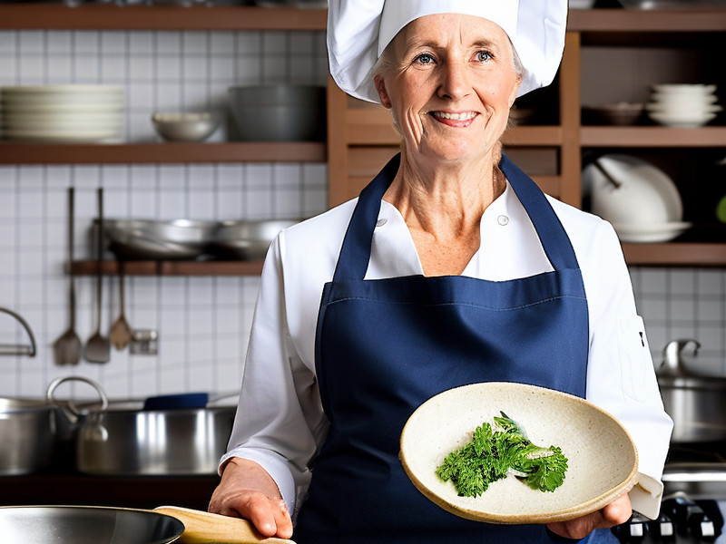
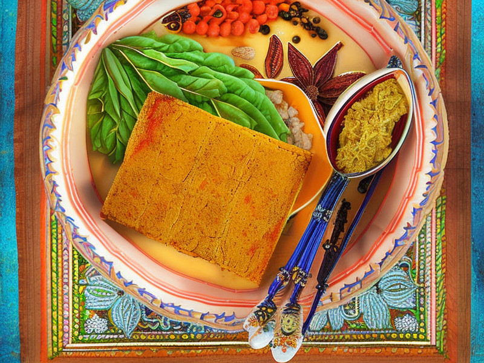
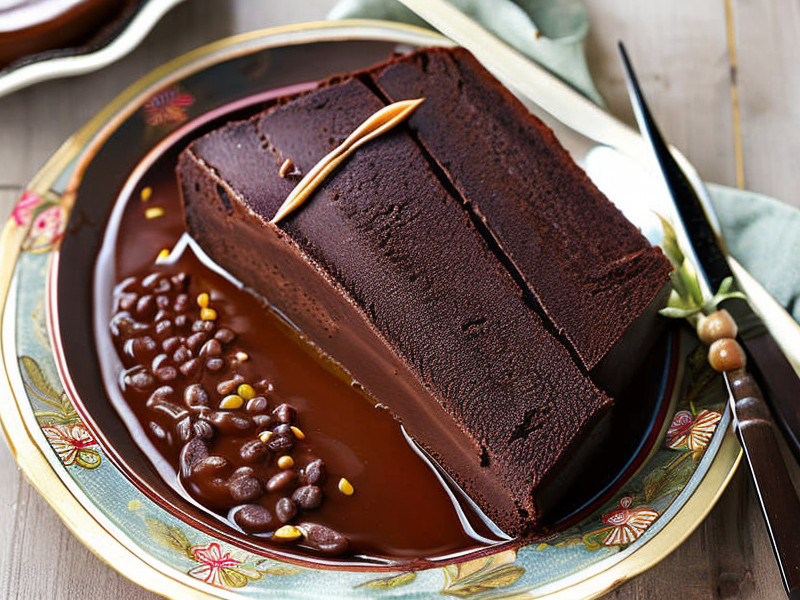

スパイス・ヨロイのプロフィール

年齢: 32
職業: 料理研究家兼冒険家
身長: 172cm, 体重: 68kg
性格: 気さく, 情熱的, 冒険好き, 寛大
趣味: 新しい料理の研究、地方の料理店を訪ねる、山登り
目標: 世界中のあらゆる種類のカレーを味わい、理想のカレーレシピを完成させる
スパイス・ヨロイの現在地
一言
"スパイスこそが人生のスパイス！"
経歴
かつては一流レストランのシェフだったが、突然のリストラに遭い、その後カレーへの新たな情熱を見つける...
旅の仲間たち
スパイスガール:静寂と深い思慮のハーブコレクター、スパイス・ガール。自然と調和し、ハーブの力で仲間を癒す。究極の治療薬を目指し、彼女の旅は続く。彼女の言葉は静けさの中に真実を運ぶ。ハーブマスターの教え子で、スパイス・ヨロイの信頼できる仲間。

シェフママ:シェフママは、心に平和と愛を植え付ける料理の達人です。彼女の腕前は星々の間で広く認められ、その料理はただ腹を満たすだけでなく、食べる者の心まで満たします。経験豊富なシェフとしての彼女の経歴は、多くのレストランでの勤務から始まり、現在では自身の料理教室を開いています。静かで親切、そして丁寧に、シェフママは料理の知識と技術を若者たち、特に彼女が心から敬愛するスパイス・ヨロイとスパイス・ガールに伝えています。シェフママの目指すところは、料理を通じて人々の心を癒し、世界に愛と平和を広げることです。
スパイス・ヨロイのお気に入りレシピ
カリータイムスパイス豆腐
豆腐とスパイスが絶妙に組み合わさった一品。スパイス・ヨロイが冒険の途中で発見した新しいスパイスを活用したレシピです。
材料
- 豆腐 - 300g
- カリーパウダー - 1tbsp
- タイム - 1tsp（スパイス・ヨロイが冒険の途中で発見した新しいスパイス）
- サラダ油 - 大さじ1
- 塩 - 少々
調理手順
- 豆腐をキッチンペーパーでしっかりと水気を取ります。
- フライパンを熱し、サラダ油を加えます。
- 豆腐をフライパンに入れ、中火で焼きます。
- カリーパウダーとタイムを加え、全体がよく混ざるように炒めます。
- 最後に、適量の塩を加えて調味し、火から下ろします。
カルダモン入りチョコレートケーキ
カルダモンの風味がアクセントになったこのチョコレートケーキは、スパイス・ヨロイの母親から教わった一品です。
材料
- チョコレート - 200g
- カルダモン - 1tsp
- バター - 100g
- 砂糖 - 150g
- 卵 - 3個
- 小麦粉 - 150g
- ベーキングパウダー - 1tsp
調理手順
- オーブンを180℃に予熱します。
- ダークチョコレートとバターを湯煎で溶かします。
- 別のボウルで砂糖と卵を混ぜ、なめらかになるまで混ぜます。
- チョコレートとバターの混合物を卵と砂糖の混合物に加え、よく混ぜます。
- 小麦粉、ベーキングパウダー、カルダモンを混ぜたものを加え、さらに混ぜます。
- 生地をケーキ型に流し入れ、予熱したオーブンで約40分焼きます。
- 焼き上がったら冷ましてから型から取り出し、完成です。